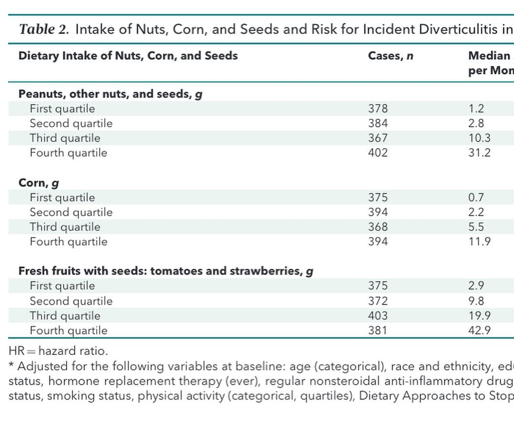
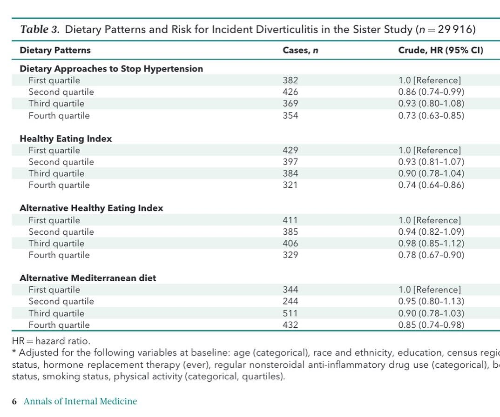
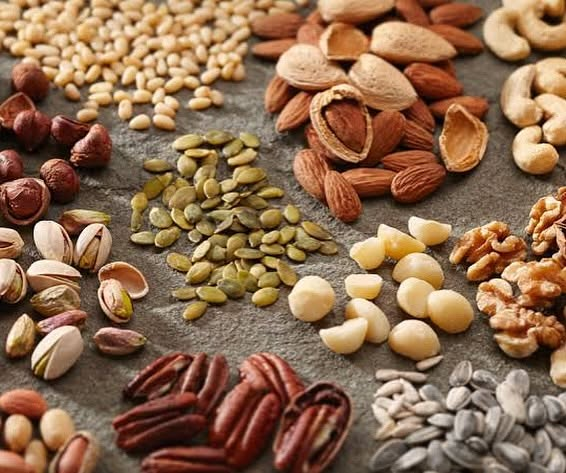

My mom has diverticulosis and was told for years to avoid eating nuts and seeds.
She always felt guilty when she ate them, but never had a problem when she did.
We now know that this advice was probably wrong. (This is not the first study to show this.)
She now eats them regularly.
🔬 New Research Challenges Long-Held Beliefs About Diet and Diverticulitis in Women
For decades, patients with diverticulitis were told to avoid nuts, seeds, and corn—foods thought to trigger painful flare-ups. But a large, prospective cohort study of nearly 30,000 women has now put that theory to rest.
Paper · Ann Intern Med · 2025Diet and Risk for Incident Diverticulitis in Womendoi.org
📉 Key Findings:
- No increased risk of diverticulitis from eating nuts, seeds, corn, or fruit with edible seeds.
- Healthy dietary patterns—like DASH, Healthy Eating Index, Alternative Healthy Eating Index, and Mediterranean-style diets—were associated with a significantly reduced risk of developing diverticulitis.
- These results were consistent across age, BMI, and menopausal status.
🌿 These findings not only help debunk the outdated guidance against “particulate foods” but also point to diet quality—rather than individual ingredients—as a more meaningful target for prevention.
This is the first prospective study in women to comprehensively analyze these associations while adjusting for overall diet quality, offering a more inclusive and nuanced perspective on dietary risk factors.
🧠 With chronic inflammation and metabolic factors like type 2 diabetes potentially mediating the development of diverticulitis, it’s time we rethink how we counsel patients on nutrition and gastrointestinal health.
Let’s shift the conversation from restriction to sustainable, evidence-based dietary patterns.
#NutritionResearch #WomensHealth #Diverticulitis #PreventiveMedicine #DASHDiet #HealthyEating #PublicHealth #GutHealth



